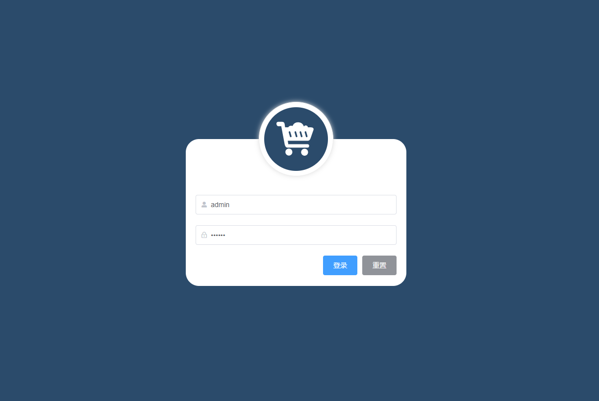

专业技能
- ▪ 熟悉w3c标准和web前端技术，熟练使用HTML(5)+CSS(3)进行网页布局;
- ▪ 熟悉掌握原生JavaScript，掌握重要概念如：原型链，闭包，作用域链，面向对象，Promise等；
- ▪ 熟悉前端模块化开发规范CMD/AMD/ES6；
- ▪ 熟悉Vue + vue-router + Vuex的使用 ，有相关项目开发经验；
- ▪ 了解 Node 使用 Express 快速搭建服务器、操作 Mongodb 数据库；
- ▪ 了解使用php基础操作MySQL数据库；
项目经验
项目介绍：
该项目是参照Ant Design、Element UI、iView 等 UI 库思路，做的一套基于 Vue3 的简易UI 组件库 。目前已支持4个基础组件，更多组件尚在开发中。 每个组件均经历从需求分析到调试，发布于 npmjs.org。 完成该项目使我对 Vue 的常用特征更加熟悉，同时提升了自己对前端工程化流程的深刻理解，近一步了解开源文化。
技术栈：
Vue / VueRouter / Element-UI / Echarts

项目介绍：
该项目是参照Ant Design、Element UI、iView 等 UI 库思路，做的一套基于 Vue3 的简易UI 组件库 。目前已支持4个基础组件，更多组件尚在开发中。 每个组件均经历从需求分析到调试，发布于 npmjs.org。 完成该项目使我对 Vue 的常用特征更加熟悉。
技术栈：
Vue / VueRouter / Echarts

开源项目
皮卡丘
项目介绍：
该项目是参照Ant Design、Element UI、iView 等 UI 库思路，做的一套基于 Vue3 的简易UI 组件库 。目前已支持4个基础组件，更多组件尚在开发中。 每个组件均经历从需求分析到调试，发布于 npmjs.org。 完成该项目使我对 Vue 的常用特征更加熟悉，同时提升了自己对前端工程化流程的深刻理解，近一步了解开源文化。